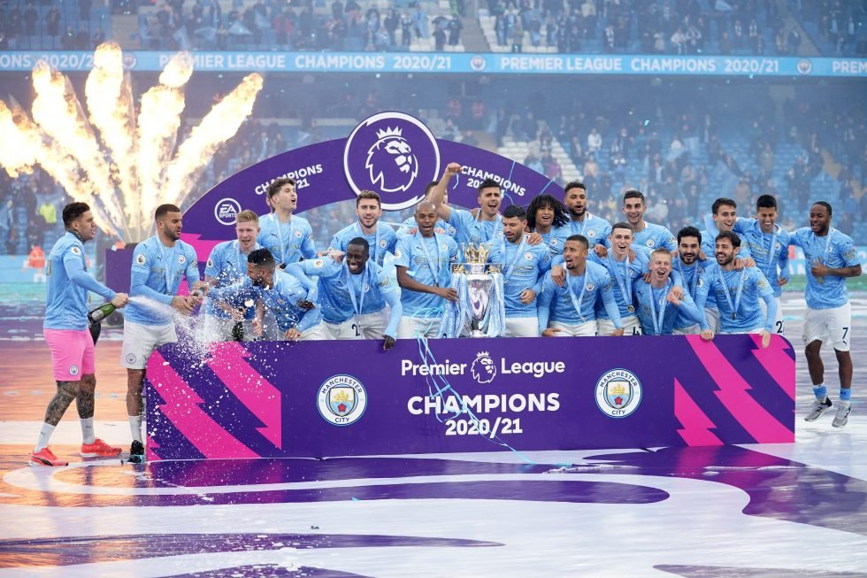
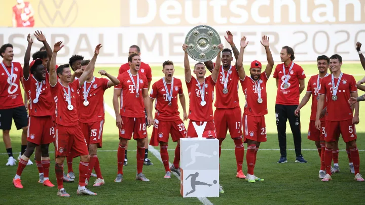
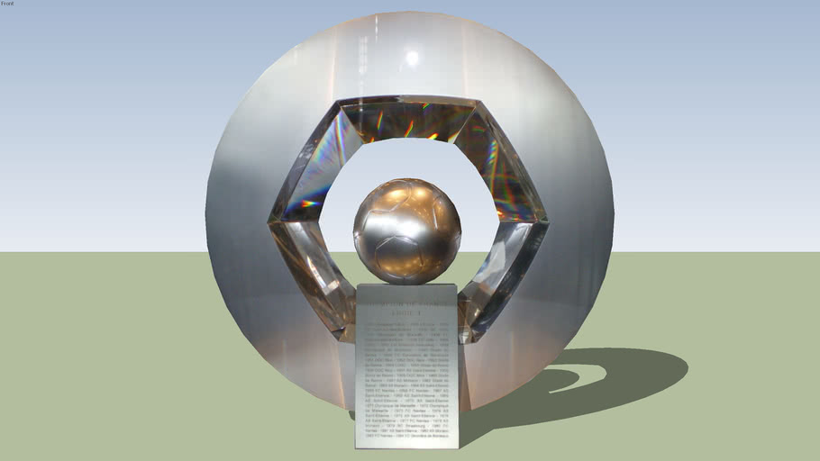

The Premier League, also known as the English Premier League or the EPL is the top level of the English football league system. Contested by 20 clubs, it operates on a system of promotion and relegation with the English Football League (EFL). Seasons run from August to May with each team playing 38 matches (playing all 19 other teams both home and away). The Premier League is the most-watched sports league in the world, broadcast in 212 territories to 643 million homes and a potential TV audience of 4.7 billion people. The Premier League ranks first in the UEFA coefficients of leagues based on performances in European competitions over the past five seasons as of 2021. The English top-flight has produced the second-highest number of UEFA Champions League/European Cup titles, with five English clubs having won fourteen European trophies in total. Fifty clubs have competed since the inception of the Premier League in 1992: forty-eight English and two Welsh clubs. Seven of them have won the title: Manchester United (13), Chelsea (5), Manchester City (5), Arsenal (3), Blackburn Rovers (1), Leicester City (1) and Liverpool (1).
There are 20 clubs in the Premier League. During the course of a season (from August to May)
each club plays the others twice (a double round-robin system), once at their home stadium and
once at that of their opponents', for 38 games. Teams receive three points for a win and one
point for a draw. No points are awarded for a loss. Teams are ranked by total points, then goal
difference, and then goals scored. If still equal, teams are deemed to occupy the same position.
If there is a tie for the championship, for relegation, or for qualification to other competitions,
a play-off match at a neutral venue decides rank.
A system of promotion and relegation exists between the Premier League and the EFL Championship.
The three lowest placed teams in the Premier League are relegated to the Championship, and the
top two teams from the Championship promoted to the Premier League, with an additional team
promoted after a series of play-offs involving the third, fourth, fifth and sixth placed clubs.
The number of clubs was reduced from 22 to 20 in 1995, when four teams were relegated from the
league and only two teams promoted. The top flight had only been expanded to 22 teams at the start
of the 1991–92 season – the year prior to the formation of the Premier League.
On 8 June 2006, FIFA requested that all major European leagues, including Italy's Serie A and
Spain's La Liga, be reduced to 18 teams by the start of the 2007–08 season. The Premier League
responded by announcing their intention to resist such a reduction. Ultimately, the 2007–08 season
kicked off again with 20 teams.
The Premier League maintains two trophies – the genuine trophy (held by the reigning champions)
and a spare replica. Two trophies are held for the purpose of making the award within minutes of
the title being secured, in the event that on the final day of the season two clubs are still
within reach of winning the League. In the rare event that more than two clubs are vying for
the title on the final day of the season, a replica won by a previous club is used.
The current Premier League trophy was created by Royal Jewellers Asprey of London. It consists
of a trophy with a golden crown and a malachite plinth base. The plinth weighs 33 pounds (15 kg)
and the trophy weighs 22 pounds (10.0 kg). The trophy and plinth are 76 cm (30 in) tall, 43 cm
(17 in) wide and 25 cm (9.8 in) deep. Its main body is solid sterling silver and silver gilt,
while its plinth is made of malachite, a semi-precious stone. The plinth has a silver band around
its circumference, upon which the names of the title-winning clubs are listed. The green of the
malachite represents the green field of play. The design of the trophy is based on the
heraldry of Three Lions that is associated with English football. Two of the lions are found
above the handles on either side of the trophy – the third is symbolised by the captain of the
title-winning team as he raises the trophy, and its gold crown, above his head at the end of the
season. The ribbons that drape the handles are presented in the team colours of the league
champions that year. In 2004, a special gold version of the trophy was commissioned to commemorate
Arsenal winning the title without a single defeat.

| Rank | Player | Goals | Appearances |
|---|---|---|---|
| #1 | Alan Shearer | 260 | 441 |
| #2 | Wayne Rooney | 208 | 491 |
| #3 | Andy Cole | 187 | 414 |
| #4 | Sergio Aguero | 184 | 275 |
| #5 | Harry Kane | 178 | 276 |
The Campeonato Nacional de Liga de Primera División, commonly known simply as Primera División
in Spain, and as La Liga in English-speaking countries and officially as LaLiga Santander for
sponsorship reasons, stylized as LaLiga, is the men's top professional football division of the
Spanish football league system. Administered by the Liga Nacional de Fútbol Profesional, it is
contested by 20 teams, with the three lowest-placed teams at the end of each season being relegated
to the Segunda División and replaced by the top two teams and a play-off winner in that division.
Since its inception, a total of 62 teams have competed in La Liga. Nine teams have been crowned
champions, with FC Barcelona winning the inaugural La Liga and Real Madrid winning the title a
record 34 times. During the 1940s Valencia, Atlético Madrid and Barcelona emerged as the strongest
clubs, winning several titles. Real Madrid and Barcelona dominated the championship in the 1950s,
each winning four La Liga titles during the decade. During the 1960s and 1970s, Real Madrid
dominated La Liga, winning 14 titles, with Atlético Madrid winning four. During the 1980s and
1990s Real Madrid were prominent in La Liga, but the Basque clubs of Athletic Club and Real Sociedad
had their share of success, each winning two Liga titles. From the 1990s onward, Barcelona have
dominated La Liga, winning 16 titles to date. Although Real Madrid has been prominent, winning
nine titles, La Liga has also seen other champions, including Atlético Madrid, Valencia, and
Deportivo La Coruña.
According to UEFA's league coefficient rankings, La Liga has been the top league in Europe in
each of the seven years from 2013 to 2019 (calculated using accumulated figures from five
preceding seasons) and has led Europe for 22 of the 60 ranked years up to 2019, more than any
other country. It has also produced the continent's top-rated club more times (22) than any other
league in that period, more than double that of second-placed Serie A (Italy), including the top
club in 10 of the 11 seasons between 2009 and 2019; each of these pinnacles was achieved by either
Barcelona or Real Madrid. La Liga clubs have won the most UEFA Champions League (18), UEFA Europa
League (13), UEFA Super Cup (15), and FIFA Club World Cup (7) titles, and its players have
accumulated the highest number of Ballon d'Or awards (23), The Best FIFA Men's Player awards
including FIFA World Player of the Year (19), and UEFA Men's Player of the Year awards including
UEFA Club Footballer of the Year (11).

The competition format follows the usual double round-robin format. During the course of a
season, which lasts from August to May, each club plays every other club twice, once at home and
once away, for 38 matches. Teams receive three points for a win, one point for a draw, and no
points for a loss. Teams are ranked by total points, with the highest-ranked club crowned champion
at the end of the season.
A system of promotion and relegation exists between the Primera División and the Segunda División.
The three lowest placed teams in La Liga are relegated to the Segunda División, and the top two
teams from the Segunda División promoted to La Liga, with an additional club promoted after a
series of play-offs involving the third, fourth, fifth and sixth placed clubs.
.jpg)
| Rank | Player | Goals | Appearances |
|---|---|---|---|
| #1 | Lionel Messi | 474 | 520 |
| #2 | Cristiano Ronaldo | 311 | 292 |
| #3 | Telmo Zarra | 251 | 278 |
| #4 | Hugo Sanchez | 234 | 347 |
| #5 | Raul | 228 | 550 |
The Bundesliga sometimes referred to as the Fußball-Bundesliga or 1. Bundesliga is a professional association football league in Germany. At the top of the German football league system, the Bundesliga is Germany's primary football competition. The Bundesliga comprises 18 teams and operates on a system of promotion and relegation with the 2. Bundesliga. Seasons run from August to May. Most games are played on Saturdays and Sundays, with a few games played on weekdays. All of the Bundesliga clubs qualify for the DFB-Pokal. The winner of the Bundesliga qualifies for the DFL-Supercup. Fifty-six clubs have competed in the Bundesliga since its founding. Bayern Munich has won the title 30 times, the most among Bundesliga clubs. However, the Bundesliga has seen other champions, with Borussia Dortmund, Hamburger SV, Werder Bremen, Borussia Mönchengladbach, and VfB Stuttgart most prominent among them. The Bundesliga is one of the top national leagues, ranked fourth in Europe according to UEFA's league coefficient ranking for the 2020–21 season, based on performances in European competitions over the past five seasons.[1] The Bundesliga led the UEFA ranking from 1976 to 1984 and in 1990. It has also produced the continent's top-rated club six times. Bundesliga clubs have won eight UEFA Champions League, six UEFA Europa League, four European Cup Winners' Cup, two UEFA Super Cup, two FIFA Club World Cup, and three Intercontinental Cup titles. Its players have accumulated nine Ballon d'Or awards, two The Best FIFA Men's Player awards, three European Golden Shoe, and three UEFA Men's Player of the Year awards including UEFA Club Footballer of the Year.
The German football champion is decided strictly by play in the Bundesliga. Each club plays every
other club once at home and once away. Originally, a victory was worth two points, with one point for
a draw and none for a loss. Since the 1995–96 season, a victory has been worth three points, while
a draw remains worth a single point, and zero points are given for a loss. The club with the most
points at the end of the season becomes German champion. Currently, the top four clubs in the
table qualify automatically for the group phase of the UEFA Champions League. The two teams at
the bottom of the table are relegated into the 2. Bundesliga, while the top two teams in the
2. Bundesliga are promoted. The 16th-placed team (third-last), and the third-placed team
in the 2. Bundesliga play a two-leg play-off match. The winner of this match plays the
next season in the Bundesliga, and the loser in the 2. Bundesliga.
If teams are level on points, tie-breakers are applied in the following order:
1. Goal difference for the entire season
2. Total goals scored for the entire season
3. Head-to-head results (total points)
4. Head-to-head goals scored
5. Head-to-head away goals scored
6. Total away goals scored for the entire season
| Rank | Player | Goals | Appearances |
|---|---|---|---|
| #1 | Gerd Muller | 365 | 427 |
| #2 | Robert Lewandowski | 309 | 379 |
| #3 | Klaus Fischer | 268 | 535 |
| #4 | Jupp Heynckes | 220 | 369 |
| #5 | Manfred Burgsmüller | 213 | 447 |
Ligue 1, officially known as Ligue 1 Uber Eats for sponsorship reasons, is a French professional
league for men's association football clubs. At the top of the French football league system, it is
the country's primary football competition. Administrated by the Ligue de Football Professionnel,
Ligue 1 is contested by 20 clubs and operates on a system of promotion and relegation from and to
Ligue 2. Seasons run from August to May. Clubs play two matches against each of the other teams in
the league – one home and one away – totalling to 38 matches over the course of the season. Most
games are played on Saturdays and Sundays, with a few games played during weekday evenings. Play
is regularly suspended the last weekend before Christmas for two weeks before returning in the
second week of January. As of 2021, Ligue 1 is one of the top national leagues, ranked fifth in
Europe, behind England's Premier League, Spain's La Liga, Italy's Serie A and Germany's Bundesliga.
Ligue 1 was inaugurated on 11 September 1932 under the name National before switching to Division
1 after a year of existence. It continued to operate under that name until 2002, when it adopted
its current name. AS Saint-Étienne is the most successful club with ten league titles in France
while Olympique Lyonnais is the club that has won the most consecutive titles (seven between
2002 and 2008). With the presence of 71 seasons in Ligue 1, Olympique de Marseille hold the
record for most seasons among the elite, while Paris Saint-Germain hold the league record for
longevity with 47 consecutive seasons (from 1974 to present). FC Nantes is the team with the most
consecutive unbeaten streak in a single season (32 matches) and have the least number of defeats
(1 match) in the 1994/95 season. In addition, FC Nantes also holds the record for the longest
time without losing at home with 92 matches from May 1976 to April 1981.
There are 20 clubs in Ligue 1. During the course of a season, usually from August to May, each club plays the others twice, once at their home stadium and once at that of their opponents, for a total of 38 games, though special circumstances may allow a club to host matches at other venues such as when Lille hosted Lyon at the Stade de France in 2007 and 2008. Teams receive three points for a win and one point for a draw. No points are awarded for a loss. Teams are ranked by total points, then goal difference, and then goals scored. At the end of each season, the club with the most points is crowned champion. If points are equal, the goal difference and then goals scored determine the winner. If still equal, teams are deemed to occupy the same position. If there is a tie for the championship, for relegation, or for qualification to other competitions, a play-off match at a neutral venue decides rank. For the 2015–16 season only, 2 teams were to be relegated and only 2 teams from Ligue 2 were to be promoted, but this decision was overturned and 3 teams were relegated and 3 teams promoted. Thus, it was the 2016–17 season which saw the return of a relegation play-off between the 18th-placed Ligue 1 team and the 3rd-placed team in the Ligue 2 on a two-legged confrontation, with the Ligue 2 team hosting the first game.
The current Ligue 1 trophy, L'Hexagoal, was developed by the Ligue de Football Professionnel and designed and created by Pablo Reinoso. The trophies has been awarded to the champion of France since the end of the 2006–07 season, replacing the previous Ligue 1 trophy that had existed for only five years. The name Hexagoal was derived from an official competition created by the LFP and French TV channel TF1 to determine a name for the new trophy. Over 9,000 proposals were sent in and, on 20 May 2007, French Football Federation member Frédéric Thiriez announced that, following an online vote, the term Hexagoal had received half of the votes. The first club to hoist the new trophy was Olympique Lyonnais who earned the honour after winning the 2007–08 season.
| Rank | Player | Goals | Appearances |
|---|---|---|---|
| #1 | Delio Onnis | 299 | 449 |
| #2 | Bernard Lacombe | 255 | 497 |
| #3 | Hervé Revelli | 216 | 389 |
| #4 | Roger Courtois | 210 | 288 |
| #5 | Thadée Cisowski | 206 | 286 |
The Serie A also called Serie A TIM for national sponsorship reasons, is a professional league
competition for football clubs located at the top of the Italian football league system and the
winner is awarded the Scudetto and the Coppa Campioni d'Italia. It has been operating as a round-
robin tournament for over ninety years since the 1929–30 season. It had been organized by the
Direttorio Divisioni Superiori until 1943 and the Lega Calcio until 2010, when the Lega Serie A
was created for the 2010–11 season. Serie A is regarded as one of the best football leagues in
the world and it is often depicted as the most tactical and defensively sound national league.
Serie A was the world's strongest national league in 2020 according to IFFHS, and is ranked third
among European leagues according to UEFA's league coefficient, behind La Liga and the Premier
League and ahead of the Bundesliga and Ligue 1, which is based on the performance of Italian
clubs in the Champions League and the Europa League during the previous five years. Serie A
led the UEFA ranking from 1986 to 1988 and from 1990 to 1999.
The league hosts three of the world's most famous clubs as Juventus, AC Milan and Inter Milan,
all founding members of the G-14, a group which represented the largest and most prestigious
European football clubs from 2000 to 2008,[7] with the first two also being founding members of
its successive organisation, European Club Association (ECA). More players have won the Ballon
d'Or award while playing at a Serie A club than any league in the world other than Spain's La Liga,
although La Liga has the highest total number of Ballon d'Or winners. Juventus, Italy's most
successful club of the 20th century and the most successful Italian team, is tied for sixth in Europe
and twelfth in the world with the most official international titles with eleven. It was also the only
one in the world to have won all possible official confederation competitions, after the campaign in
the UEFA Intertoto Cup in 1999 and prior to the introduction of the UEFA Europa Conference League in
2021. Milan is joint third club overall for official international titles won with eighteen. Inter
Milan, following their achievements in the 2009–10 season, became the first Italian team to have
achieved a seasonal treble. It is also the team to have competed ininterruptely for the most time
in the top flight of Italian football, having seen its debut in 1909. All these clubs, along with
Lazio, Fiorentina, Roma and Napoli, are known as the Seven Sisters of Italian football.
During the season, which runs from August to May, each club plays each of the other teams twice;
once at home and once away, totalling 38 games for each team by the end of the season. In the first
half of the season, called the andata, each team plays once against each league opponent, for a
total of 19 games. In the second half of the season, called the ritorno, the teams play another
19 games, once more against each opponent, in which home and away matches are reversed. The two
halves of the season had exactly the same order of fixtures until the 2021–22 season, when an
asymmetrical calendar was introduced, following the format of the English, Spanish, and French
leagues. Since the 1994–95 season, teams are awarded three points for a win, one point for a
draw, and no points for a loss. Prior to this, teams were awarded two points for a win, one for
a draw, and none for a loss.
The top four teams in the Serie A qualify straight to the UEFA Champions League. The team finishing
fifth, with the winner of the Coppa Italia, qualify for the UEFA Europa League tournament. The
sixth or the seventh ranked club, depending from the Coppa Italia winner's performance, joins
the preliminary round of the UEFA Europa Conference League. The three lowest-placed teams are
relegated to Serie B.
Since the 2005–06 season, when two or more teams are tied in points (for any place), the deciding
tie-breakers are as follows:
1. Head-to-head records (results and points)
2. Goal difference of head-to-head games
3. Goal difference overall
4. Higher number of goals scored

| Rank | Player | Goals | Appearances |
|---|---|---|---|
| #1 | Silvio Piola | 274 | 537 |
| #2 | Francesco Totti | 250 | 619 |
| #3 | Gunnar Nordahl | 225 | 291 |
| #4 | Giuseppe Meazza | 216 | 367 |
| #5 | José Altafini | 216 | 459 |